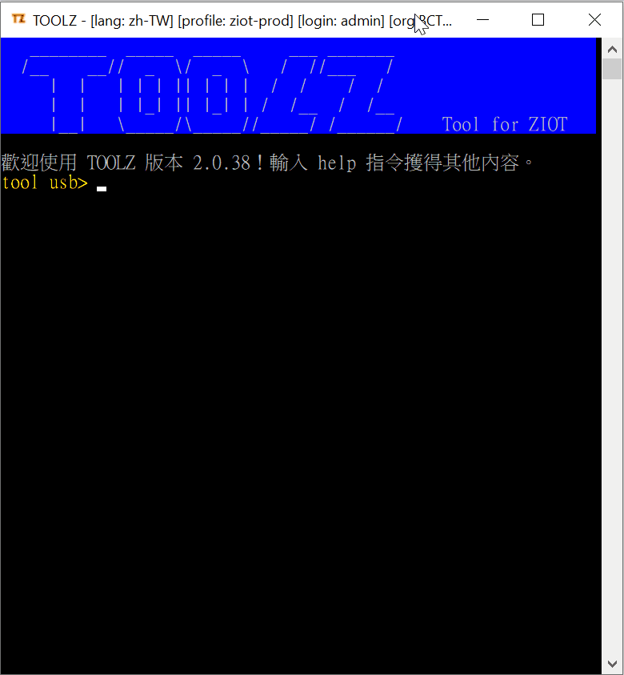
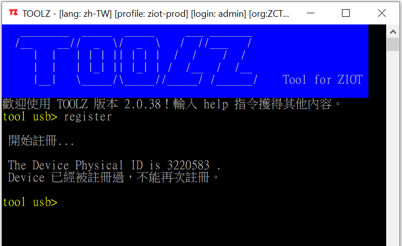

註冊 Basebox
2019-12-04
註冊 Basebox 是把該 Basebox 分配給 ZIOT 的一個組織上使用。
註冊過程中，服務器及 Basebox 分別都會寫入一些資料。
需要的物件
- 安裝好 BASE03F3 程序的 Basebox
- micro USB 數據線
- toolz 程式
- toolz 程式有對應的系統 profile 設定
- 一個有
toolz權限的 ZIOT 用戶帳號
預備動作
不論你要對多少個 Basebox 執行，預備動作只需在「執行動作」之前做一次。
-
用 micro USB 數據線 連接 Basebox 及你的電腦端口
Note
以下假設: 你的電腦連接端口是 COM3。而你的預設端口亦是 COM3。
-
在 toolz 確定選好 profile
Note
在 title bar 上檢查目前的 profile，如果沒有或 profile 你不是你想登入的，請選用另一個 profile。
-
在 toolz 確定 login 該 profile
Note
在 title bar 上檢查目前的 login 及 org，確定你登入正確的組織。
你可在 Web UI 上查看你的 login 是否有toolz權限。 -
在 toolz 轉到 usb 模組
Note
如果你目前不在 usb 模組，請鍵入命令
cd usb。如果你已在 usb 模組，則略過此步。
執行動作
對每個要處理的 Basebox ，執行動作都需做一次。
-
在 toolz 確定 Basebox 已在 非自動執行模式 (stop-auto mode)
Note
如果 Basebox 已在 非自動執行模式 ，則略過此步。
執行預設指令
stop-autotool usb> cmd stop-auto
-
在 toolz 執行註冊
Note
以下假設你的註冊資料: Usage 是
Generic，Description:MOS2 BASE03F3。執行命令
tool usb> register
動畫: register

Note
注意 在同一組織曾經註冊過的 Basebox是不能再註冊的。
例子: register 發現 Basebox 曾經註冊過
